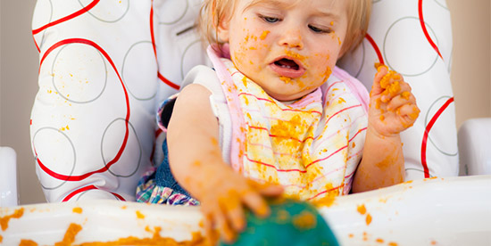
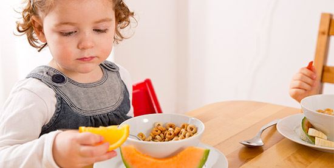
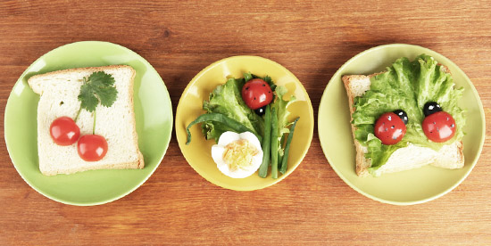
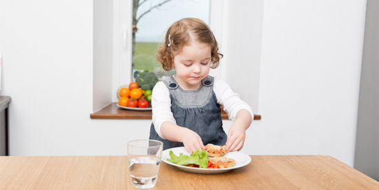
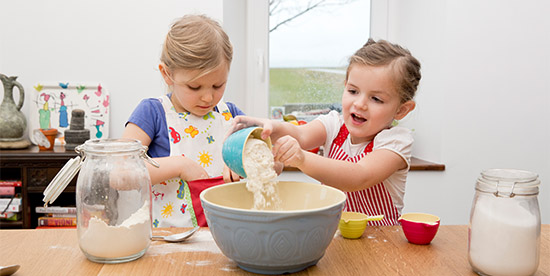
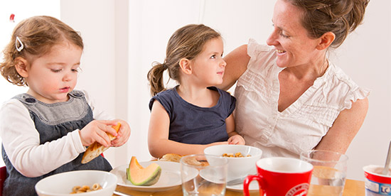
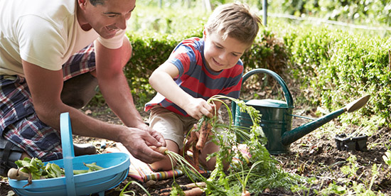
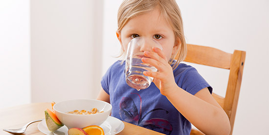
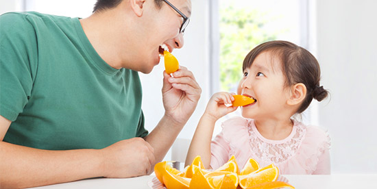
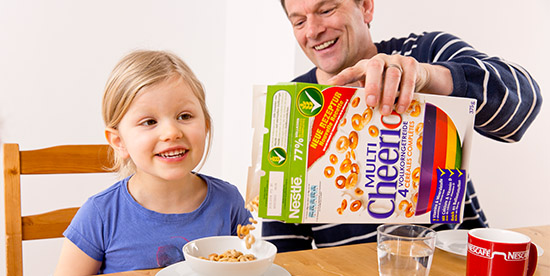

1. Don't give up

Most babies and young children need to try something new seven to ten times before they like it. So don’t be afraid to introduce children to new or more exotic tastes.
A good tactic to get kids to eat a wide variety of foods is to tell them that tasting new things is a sign they’re growing up. Or, take them shopping and let them choose a new, healthy food to serve at home with something they already like.
2. Learn when to stop

Although children are born with the ability to stop eating when they are full, it can often be hard for parents to judge whether their kids have eaten the right foods, and enough of them.
Teaching children to listen to their tummies and to ask themselves questions about quantity and quality, such as “Is my tummy full?” or “Will I feel sick if I eat those extra biscuits?” will give them the opportunity to develop their ability to sense fullness.
3. Be creative

All the vibrant colours in fruit and vegetables come from natural plant chemicals that have healthy effects on our bodies. Different colours have different effects, so it’s good to eat a variety of different colours each day.
Offer your kids a colourful snack of different fruits and berries, or chop vegetables into interesting shapes to make them seem more fun and exciting.
4. Slow it down

Eating slowly is great for weight control at any age. It’s a fantastic way to show kids that it takes about 20 minutes for the message that they are full to get from their stomachs to their brains.
As much as we’d love our children to finish their meal in minutes, rather than hours, it’s much more important that they learn to slow down and chew their food properly.
5. Have fun in the kitchen

Children are more likely to become adventurous eaters if they know how to cook. Make it fun by giving them their own aprons and letting them help you regularly with small tasks in the kitchen.
As they get older and more confident, let them cook dinner once a week. If the thought of kids in the kitchen sounds like a recipe for disaster, why not enrol them in cooking classes during the school holidays?
6. Eat together

It’s tempting to eat dinner in front of the television, to wolf down lunch at your desk, and to grab snacks on the run.
If you can encourage your children to eat regular meals with you at the table, it can not only reduce snacking, it can also teach valuable social skills.
7. Grow your own

Growing vegetables and herbs at home can be a fun way to teach children where food comes from and to encourage them to eat a more varied diet.
They’re more likely to take at least a little bite of broccoli or carrots if they’ve helped to plant and pick them. If you don’t have a garden, a window box can be just as effective.
8. Drink water

Make water the drink of choice at meal times, and keep juice and sweet drinks as occasional treats.
While juice has valuable nutrients and gives a concentrated energy boost for active, growing bodies, kids should go for water first when they are thirsty, not sugar-sweetened drinks.
9. Choose healthier snacks

It’s easy to reach for chips or biscuits when you and your children feel like nibbling on something, but these snacks tend to be low in nutrients and high in calories.
Instead, try to keep your cupboards stocked with healthier snacks such as fruit, air-popped popcorn, unsalted nuts and unsweetened yoghurt.
10. Eat breakfast

Eating breakfast, even if it’s just a banana and a glass of milk, kick-starts the body and makes it easier to maintain lasting energy throughout the day.
If you can get your kids to establish the habit of eating a good breakfast at a young age, it should stay with them as they get older.